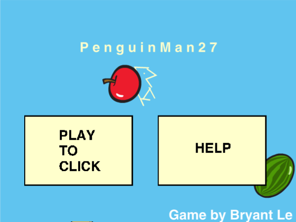
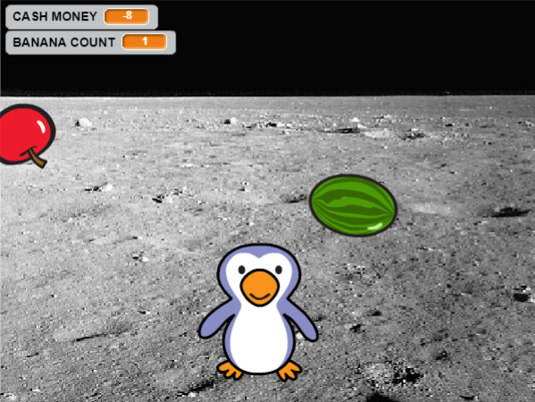

MY PORTFOLIO
Scratch Game: PenguinMan27
 PENGUINMAN27 GAME LINK
GAME DESCRIPTION
You are a penguin, living on the moon, collecting fruit to feed your
family. You are on a mission that requires you to use your primitive skills
in order to ensure that future generations will live on. I implemented
a scoring system by making a points system with the variable, CASH MONEY.
The points system varies by the unique fruits you collect; you can lose
points or gain points. The way you lose the game is by collecting 3
bananas, and the way you progress is by achieving more than 50 CASH MONEY.
The use of randomness occurs when the fruits are either collected by the
penguin or fall down to a certain point, where they are teleported to a
random x-position and fixed y-position. The game becomes more difficult
after achieving more than 50 CASH MONEY because the speed of the fruits
become faster and fluctuates.
REFLECTION
I was inspired to name and create this game by my friend whose name is
PenguinMan24. I made the concept of the game similar to a game I played
when I was a kid since it gave me a sense of nostalgia. Two successful
points while making my game were making the fruits spawn randomly and
the controls for the penguin. Two obstacles while making my game were
sensing whether the fruit has touched the ground and making the game
progress upon reaching 50 CASH MONEY. Through trial and error, I figured
out how to program those components of my game. If I had more time to
work on this game, I would improve its difficulty factor so you can choose
between levels of difficulty. I can implement "Easy, Medium, or Hard" after
clicking play.
ALGORITHM
An algorithm that contributes significantly to my gameis how the
Penguin collects the fruits. It works by sensing if the penguin has
touched any of the fruits in which it sends a broadcast to those fruits
to change the CASH MONEY accordingly and to spawn randomly with their
cooldowns.